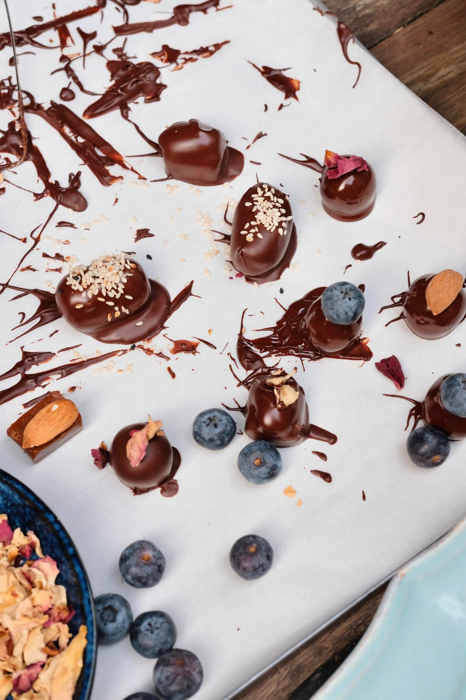

Café Stamba blends fresh takes on traditional Georgian dishes with international flavors, adding a new twist to Tbilisi's food scene. The seasonally changing menu is crafted with locally sourced ingredients, many proudly grown at Udabno Regenerative Farm, Adjara Group’s agricultural project in Kakheti. The open kitchen makes a bold statement upon entry, and the distinctive menu has quickly become a favorite for locals and tourists alike, delivering a unique dining experience in the heart of the city.
